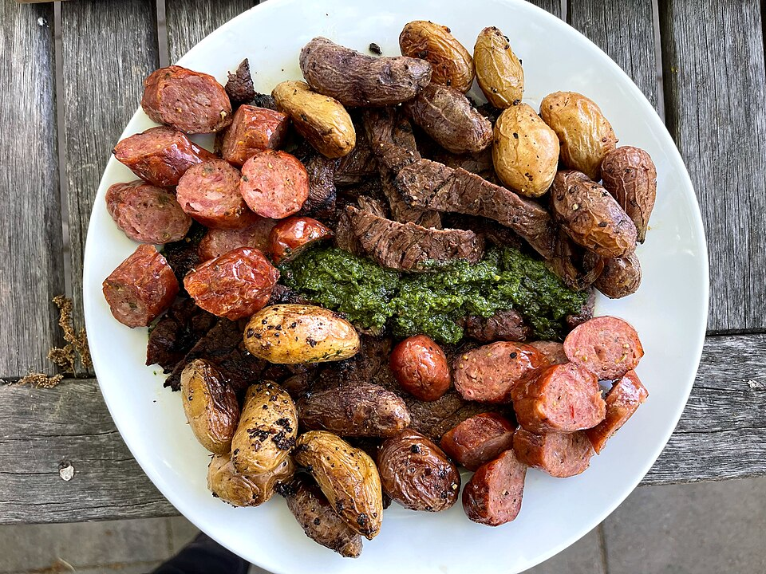

Dinner, Protein, Prep, By Claude
2 lb chicken sausage (8 links), cut into 2-inch pieces
1 1/2 lb baby potatoes, halved (quartered if large)
2 bell peppers (mixed colors), cut in strips
1 red onion, cut in wedges
1 tablespoon olive oil
1 teaspoon smoked paprika
1 teaspoon garlic powder
1/2 teaspoon dried oregano
1/2 teaspoon kosher salt, 1/4 tsp black pepper
To serve
Grainy mustard, chopped parsley, a squeeze of lemon
Good the night before a long run: plenty of carbs, enough protein, and almost no hands-on time. Uses butcher-counter chicken sausage.
Heat the oven to 425°F. Toss the potatoes with half the oil and half the spices. Roast cut-side down 15 minutes.
Toss the peppers and onion with the rest of the oil and spices. Add them and the sausage to the pan (use a second pan if crowded, so things brown instead of steaming).
Roast another 18–20 minutes, stirring once, until the sausage is browned and the potatoes are crisp. Raw sausage needs to reach 165°F inside.
Divide into 4 containers. Serve with mustard and parsley. Keeps 4 days.
~500 CALORIES
33G PROTEIN
20G FAT
40G CARBS
5G FIBER
Photo: Sausage, potatoes, steak and Zhoug - Sarah Stierch.jpg by Missvain, CC BY 4.0, via Wikimedia Commons. Representative image, not this exact recipe.